مرورگر سنو
وب را دست به دست کن! سِنو اولین مرورگر وب در جهان است که عملکردش با هر نصبِ تازه، بهتر میشود. این مرورگر در عین فراهم آوردن تجربهای عادی از وبگردی، بر پایه فناوری همتابههمتا (P2P) عمل میکند تا وبسایتها را بین تمام کاربران دست به دست کند. سِنو همچنین میتواند برای دور زدن محدودیتهای شبکه و دسترسی به محتوا در زمان قطعی اینترنت استفاده شود.
🔓👀 با سِنو به رسانههای فیلترشده و دیگر وبسایتها دسترسی پیدا کنید. این دسترسی رایگان و در حالت شخصی، ناشناس است.
🚫🌴 در صورت قطع اینترنت در کشور، همچنان میتوانید بهکمک سِنو اخبار را بخوانید و در ارتباط بمانید.
📱🤝📱 اگر در کشوری با دسترسی آزاد به اینترنت زندگی میکنید، با سِنو میتوانید بهسادگی به افراد کشورهای دیگر کمک کنید تا سانسور را دور بزنند و به اطلاعات مستقل دسترسی داشته باشند. در وبسایت ما در این باره بیشتر بخوانید.
📖👐 مرورگر سِنو بر اساس یک کتابخانه متنباز یعنی Ouinet ساخته شده است. میتوانید کدهای اپ را در گیتلب بررسی کنید.
🛠🦹🏻 محصول ما ممکن است به دلیل پیشرفت مداوم فناوریهای سانسور، ناپایداریهایی داشته باشد. ما همواره سِنو را بهبود میبخشیم تا مطمئن شویم دسترسی شما حفظ میشود. اگر وبسایتها بهکندی بارگذاری میشوند یا باز نمیشوند، لطفا برنامه را حذف نکنید — چند روز دیگر دوباره به سراغ آن بروید یا با تیم پشتیبانی ما تماس بگیرید: support [at] ceno [dot] app
سنو توسط eQualitie توسعه داده شده است. سِنو یک مرورگر کاملا رایگان و متنباز است که نیازی به ثبتنام ندارد. این مرورگر کاملا بدون تبلیغات است.
ما برخی دادههای آماری ناشناس مربوط به برنامه و شبکه را جمعآوری میکنیم. هیچ اطلاعات شخصیای جمعآوری نمیشود و این دادهها هرگز با اشخاص ثالث به اشتراک گذاشته نمیشوند. جمعآوری این دادهها بهصورت پیشفرض فعال است، اما کاربران میتوانند در هر زمان با مراجعه به تنظیمات ← آمار پسزمینه ← آمار سنو آن را غیرفعال کنند. برای اطلاعات بیشتر درباره دادههایی که جمعآوری میکنیم، لطفا سیاست حریم خصوصی ما را ببینید.
مقدمه
سنو یک مرورگر وب موبایل بر پایه اجزای اندروید موزیلا است. این مرورگر برای دسترسی و توزیع محتوای وب (وبسایتها) با رویکردی نو طراحی شده است که بر بیتتورنت – یک شبکه اشتراکگذاری فایل غیرمتمرکز متکی است. مزیت سنو در دور زدن روشهای کنونی سانسور اینترنت و فراهم کردن امکان دسترسی و اشتراکگذاری اطلاعات وب در مناطق و میان کاربرانی است که اتصال اینترنت آنها قطع یا مختل شده است.
مرورگر سنو این امکان را میدهد که به هر وبسایتی در اینترنت دسترسی داشته باشید، حتی اگر به طور معمول در کشور یا منطقه شما قابل دسترسی نباشد.
اگر وبسایتی که میخواهید بازدید کنید قابل دسترسی باشد، سنو بهطور مستقیم به آن دسترسی پیدا کرده و مانند هر مرورگر دیگری عمل میکند. اما اگر نتوانید مستقیما به وبسایت مورد نظر دسترسی داشته باشید، سنو تلاش میکند از طریق شبکه همتابههمتای خود به آن دسترسی پیدا کند. سنو محتوای وبسایت بازیابیشده را در حافظه ذخیره میکند و با استفاده از فناوری همتابههمتا در دسترس سایر کاربران سنو قرار میدهد.
وقتی سایر اعضای شبکه سنو همان محتوا را درخواست کنند و نتوانند مستقیما به آن دسترسی پیدا کنند، سنو تشخیص میدهد که محتوای وبسایت در حافظه پنهان برنامه سنو روی دستگاه شما ذخیره شده است. سپس آن محتوا از دستگاه شما به اینترنت بارگذاری شده و به کاربری که آن را درخواست کرده منتقل میشود. در بخش تنظیمات برنامه سنو، میتوانید ببینید چه مقدار داده روی دستگاه شما ذخیره شده و کدام وبسایتها را به اشتراک گذاشتهاید.
البته این مورد فقط درباره وبسایتهایی صدق میکند که در حالت عمومی بازدید میکنید.
برای همه نیازهای شخصی شما مانند ایمیلها، پیامها، عضویتها یا خریدها، ما حالت شخصی را ارائه کردهایم. وقتی در این حالت به اینترنت دسترسی پیدا میکنید، برنامه سنو صفحههایی را که باز میکنید ذخیره نمیکند و بنابراین آنها را با هیچ کس دیگری به اشتراک نمیگذارد.
این راهنمای کاربر شامل اطلاعات دقیقی درباره ویژگیهای سنو و کاربرد آنها است.
امیدواریم از کار با برنامه ما رضایت داشته باشید.
نصب
سنو برای اندروید را میتوان از طریق پلتفرمهای زیر دانلود کرد: گوگل پلی، گیتلب، پسکوچه یا dComms.
لطفا برنامه را دانلود و نصب کنید. پس از نصب، روی «باز کردن» بزنید. نخستین صفحهای که در سنو خواهید دید این است
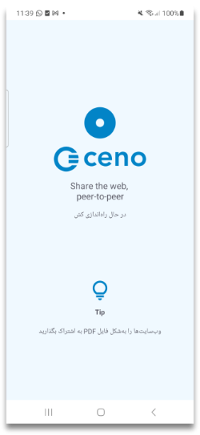این صفحه هنگامی که برنامه سنو در حال برقراری اتصال با بقیه شبکه سنو است برای چند ثانیه نمایش داده میشود. پس از این مدت کوتاه، برنامه شما را به صفحههای آشناسازی میبرد.

اولین اجرا
راهنمای گامبهگام
هنگامی که برای نخستین بار برنامه سنو را اجرا میکنید، به یک تور راهنمای گامبهگام و کوتاه از ویژگیهای اصلی سنو دعوت میشوید. میتوانید آن را بپذیرید (با زدن رو «شروع کنید») یا رد کنید (با لمس «صرفنظر از تور»)
این تور شما را همان طور که در تصاویر زیر نشان داده شده، یر با مهمترین ویژگیهای برنامه آشنا میکند.


مجوزها
در پایان تور از شما درخواست میشود تا برای عملکرد بهینه، مجوزهای لازم را به سنو بدهید:

وقتی روی «ادامه» بزنید، بسته به نسخه اندروید گوشیتان، لازم است مجوز ارسال اعلانها و غیرفعال کردن بهینهسازی باتری را به سنو بدهید. بعضی نسخههای اندروید هر دو را نیاز دارند و بعضی فقط مجوز غیرفعال کردن بهینهسازی باتری را میخواهند.
اعلانها

وقتی به سنو اجازه ارسال اعلان بدهید، برنامه آیکون سنو را در نوار اعلانها نمایش خواهد داد.

این آیکون هنگام دسترسی به نخستین وبسایت ظاهر خواهد شد.
این آیکون نشاندهنده سرویس مرورگر سنو است، یعنی آن بخشی از سنو که بهطور دائمی
اجرا میشود (حتی زمانی که مشغول مرور نیستید) و به دیگر کاربران سنو امکان میدهد
در هر زمانی محتوایی را از آن دریافت کنند. از آنجا که اجرای چنین سرویسی منابع
شبکه و پردازنده را مصرف میکند، ممکن است بخواهید هر زمان که در حال جابهجایی
هستید (مثلا وقتی به وایفای متصل نیستید یا از شارژر دورید) آن را متوقف کنید.
با زدن روی دکمه «توقف»، هم سنو و هم سرویس آن بهطور همزمان متوقف میشوند (تا
زمانی که دوباره سنو را باز کنید).

زدن روی دکمه «پاک کردن» یک اعلان کوچک دیگر باز میکند

زدن روی «بله» نهتنها دادههای ذخیرهشده در برنامه سنو روی دستگاه شما را حذف میکند، بلکه تمام تنظیمات سفارشی مانند موقعیت پیشفرض نوار آدرس، یا تم روشن، یا موارد دلخواه و سایر تنظیماتی را که انتخاب کردهاید نیز پاک خواهد کرد. اگر روی گزینه «بله» بزنید، سنو متوقف شده و همه دادههای آن بدون پرسش بیشتر حذف میشود و دستگاه شما عملا در وضعیتی قرار میگیرد که انگار هرگز از سنو استفاده نشده است.
هشدار: اندروید ممکن است جدا از دادههای یک برنامه، ردهای دیگری از استفاده از آن را هم مثلا در گزارش سیستمی نگه دارد
توقف بهینهسازی مصرف باتری

این گزینه معمولا در برنامههایی وجود دارد که نیاز دارند حتی زمانی که بهطور فعال استفاده نمیشوند در پسزمینه اجرا شوند، مانند برنامه سنو. در شرایط عادی، گوشی اندرویدی شما تلاش میکند مصرف باتری برنامههای مختلفی را که ممکن است روی دستگاهتان اجرا شوند بهینه کند. سیستمعامل گوشی این کار را برای طولانیتر کردن عمر باتری بین دو بار شارژ انجام میدهد. برای این منظور، گاهی برنامههایی را که در حال اجرا و مصرف باتری هستند اما بهطور فعال از آنها استفاده نمیکنید، متوقف میکند. وقتی به سنو اجازه میدهید که بهینهسازی مصرف باتری متوقف شود، احتمال کمتری هست که سیستمعامل گوشی شما برنامه سنو را موقعی که بهطور فعال از آن استفاده نمیکنید متوقف کند. اجازه دادن به اجرای برنامه سنو حتی در زمانی که فعالانه استفاده نمیشود، به کل شبکه همتابههمتای سنو کمک میکند بهتر کار کند و به درخواستهای کاربران بیشتری پاسخ دهد. با فعال کردن این گزینه، شما به همه کاربران در شبکه سنو کمک میکنید.
عمومی یا شخصی؟
پس از صفحات آشناسازی و مجوزها، برنامه صفحه اصلی خود را نمایش میدهد. به محض ظاهر شدن این صفحه، دو دکمه شاخص با عنوانهای «عمومی» و «شخصی» را خواهید دید. این دکمهها به شما امکان میدهند که بین حالت مرور عمومی و حالت مرور شخصی انتخاب کنید.

مرورگری عمومی

تصویر زیر نحوه بازیابی محتوای وبسایت در حالت مرور عمومی سنو را نشان میدهد.

خطوط نقطهچین در این تصویر نشاندهنده درخواستها و پاسخهای محتوای وبسایت هستند و علامتهای ستاره محتوای رمزگذاریشده را نشان میدهند.
در حالت مرور عمومی، درخواستهای کاربران توسط شبکه عمومی سنو پردازش
میشوند. در این حالت، کاربران محتوای یک وبسایت را همان طور درخواست میکنند که
هنگام استفاده از هر مرورگر دیگری انجام میدهند. اگر سنو بتواند مستقیما به
وبسایت مبدا دسترسی پیدا کند، محتوای آن را بازیابی میکند و به کاربر ارائه
میدهد – درست مانند اغلب مرورگرهای دیگر.
اما اگر سنو نتواند به وبسایت مورد نظر دسترسی پیدا کند، تلاش خواهد کرد از طریق
تزریقکنندهها (injectors) به آن دست یابد.
تزریقکنندهها
تزریقکنندهها یا injectors سرورهای امنی هستند که مسئولیت تزریق محتوای پرکاربرد به شبکه سنو و همچنین تایید اصالت و امضای آن را بر عهده دارند. تزریقکنندهها در مکانهای راهبردی قرار داده شدهاند تا هم برای کاربران در مناطق محدودشده قابل دسترس باشند و هم بتوانند به وبسایتهای مبدا دسترسی پیدا کنند. به کمک آنها محتوای مورد نظر یا از وبسایت مبدا یا از شبکه سنو بازیابی شده و به کاربری که آن را درخواست کرده تحویل داده میشود. این سرورها توسط eQualitie اداره میشوند.
بهعنوان کاربر، لازم نیست برای اتصال به یک تزریقکننده کاری انجام دهید – وقتی وبسایتی را درخواست کنید که دسترسی مستقیم به آن وجود ندارد، برنامه بهطور خودکار این کار را انجام میدهد.
پلها
پلها دستگاههایی هستند که به کاربران سنو تعلق دارند و در مکانهایی قرار گرفتهاند که از اتصال و دسترسی اینترنت نسبتا بدون محدودیت برخوردارند. این دستگاهها برای آن دسته از کاربران سنو که نمیتوانند مستقیما به وبسایتها دسترسی پیدا کنند قابل دسترساند. وظیفه آنها ارسال درخواستهای رمزگذاریشده کاربران به تزریقکنندهها و بازگرداندن پاسخهای رمزگذاریشده به کاربران است.
پلها نمیتوانند درخواستها و پاسخهایی را که منتقل میکنند بخوانند.
هر کاربر سنو میتواند دستگاه خود را طوری پیکربندی کند که به یک پل تبدیل شود.
کلید تغییر وضعیت فعالسازی حالت پل را میتوان هم از طریق پیوند موجود در صفحه اصلی و هم از منوی سهنقطهای عمودی در سمت راست نوار آدرس پیدا کرد.

در صفحه تنظیمات، تغییر کلید فعالسازی حالت پل به وضعیت روشن


دستگاه شما را به پلی برای سایر کاربران سنو که دسترسی محدودتری به اینترنت دارند تبدیل میکند. این کار نیازمند راهاندازی مجدد سرویسهای سنو است

پس از آن که حالت پل با موفقیت برقرار شد، یک پیام تایید دریافت خواهید کرد.

از این نقطه به بعد، برنامه سنو میتواند روی دستگاه شما بهعنوان یک پل عمل کند تا به کاربران سنو در مناطق محدودشده کمک کند به محتوای مورد نظر دسترسی پیدا کنند.
با این حال، پل شدن همچنین نیازمند تنظیمات مشخصی در روتر یا شبکه شماست که در بخش پیکربندی پل توضیح داده شده.
کَش سنو
و در نهایت، حافظه پنهان (کَش) سنو. همه کاربران سنو عضو این شبکه همتابههمتا هستند و محتوای وبسایتی را که از طریق شبکه عمومی سنو بازیابی شده ذخیره میکنند و با یکدیگر به اشتراک میگذارند.
در حالت مرور عمومی، سنو محتوای درخواستشده را از طریق هر یک از این کانالهای ارتباطی بازیابی میکند. این برنامه همه دادههای خصوصی (مانند گذرواژهها و کوکیها) را از ترافیک وب حذف میکند تا مطمئن شود هیچ یک از آنها به سایر کاربران درز پیدا نمیکند.
مرور عمومی – چه زمانی از آن استفاده کنیم
این گزینه برای شما یعنی کاربر در نظر گرفته شده تا به بیشتر چیزهایی که نیاز به لاگین کردن یا وارد کردن داده شخصی ندارند دسترسی داشته باشید. میتوانید از این حالت برای مرور وب، گوش دادن به پادکست، دیدن اخبار، خواندن وبلاگها یا مقالهها، دنبال کردن ورزش، علم، موسیقی، رویدادها یا سایر محتواها استفاده کنید. در حالت مرور عمومی، سنو ممکن است تلاش کند محتوای درخواستی را مستقیما از وبسایتها، از شبکه عمومی سنو (تزریقکنندهها و پلها) یا از سایر کاربران سنو (حافظه پنهان توزیعشده) بازیابی کند.
لطفا توجه داشته باشید که برخی محتواها که برای اشتراکگذاری ایمن محسوب نمیشوند هرگز تزریق نخواهند شد، فرقی نمیکند چند نفر آنها را با استفاده از مرور عمومی بازیابی کنند. این موارد شامل محتوایی است که توسط سرور مبدا، بهعنوان خصوصی علامتگذاری شده، محتوایی که نیاز به احراز هویت دارد، و بخشی از ترافیکی که توسط برخی برنامههای وب پویا مبادله میشود.
منابع وبسایت در حالت عمومی
وقتی میخواهید با استفاده از حالت عمومی سنو به یک وبسایت دسترسی پیدا کنید، اپلیکیشن ممکن است محتوا را مستقیما از خود وبسایت یا از طریق شبکه عمومی سنو بازیابی کند. در فصل بعدی این فرایند را با جزئیات بیشتر توضیح میدهیم.
محتوا مستقیما از وبسایت بازیابی شده است
سنو زمانی که سرور مبدا در دسترس باشد، محتوای مورد نظر را مستقیما از آن بازیابی میکند. این همان روشی است که در بیشتر مرورگرهای رایج برای دسترسی به وبسایتها استفاده میکنید.

وقتی به این شکل به وبسایتها دسترسی پیدا میکنید، آنها در حافظه کش شما ذخیره نمیشوند و نمیتوانید آنها را با دیگر اعضای شبکه سنو به اشتراک بگذارید. هنگامی که سنو محتوا را از سرور مبدا بازیابی میکند، دکمه کوچک سنو در نوار آدرس یک نقطه سبز خواهد داشت.

اگر روی آن دکمه بزنید، خواهید دید چه تعداد از اجزای وبسایت درخواستی از خود وبسایت، از شبکه سنو یا از کش سنو بازیابی شدهاند.

اگر به مسیر تنظیمات > دادهها بروید، میتوانید تایید کنید که پس از دسترسی مستقیم به یک وبسایت از سرور خودش، هیچ دادهای در کش شما ذخیره نشده است.

در این حالت، خطراتی که شما بهعنوان کاربر با آن روبهرو هستید مشابه خطرات استفاده از هر مرورگر دیگری است. بیشتر بدانید.
محتوا از طریق شبکه عمومی سنو بازیابی شده است
وقتی سنو نتواند به سرور مبدا دسترسی پیدا کند، تلاش میکند از طریق شبکه عمومی سنو به آن دسترسی یابد.

این شبکه شامل سرورهای امنی به نام تزریقکنندهها (injectors) است که دسترسی مستقیم به وبسایتهای مبدا (اصلی) دارند و محتوای آن وبسایتها را به شبکه سنو وارد میکنند. هنگامی که محتوای وبسایتی از طریق شبکه عمومی سنو بازیابی شود، این موضوع با یک نقطه نارنجی روی دکمه کوچک سنو در نوار آدرس مشخص میشود.

زدن این دکمه یک پنجره کوچک باز میکند که به شما اطلاع میدهد چه تعداد از اجزای وبسایت از شبکه عمومی سنو بازیابی شدهاند.

هر وبسایتی که به این روش به آن دسترسی پیدا کنید، در کش محلی مرورگر سنو شما ذخیره خواهد شد و در دسترس دیگر اعضای شبکه سنو قرار میگیرد.
میتوانید با رفتن به مسیر تنظیمات > دادهها ببینید کدام وبسایتها در کش شما ذخیره شدهاند.
در آن بخش سه گزینه وجود دارد: حافظه کش محلی، محتوای بهاشتراکگذاشتهشده
توسط شما و پاک کردن محتوای حافظه کش.
بخش حافظه کش محلی به شما نشان میدهد چه مقدار داده در کش سنو روی دستگاه شما
ذخیره شده است.

اگر روی محتوای بهاشتراکگذاشتهشده توسط شما بزنید، میتوانید وبسایتهایی را ببینید که دستگاه شما میتواند در شبکه سنو در دسترس قرار دهد.

زدن گزینه پاک کردن محتوای کش به شما امکان میدهد همه دادههای کششده را حذف کنید.

محتوای کششده
این روش دسترسی به وبسایتها زمانی مفید است که سایر اجزای شبکه عمومی سنو در
دسترس نباشند، یا هنگامی که شما به هر دلیل تصمیم بگیرید از دستگاه همتایان خود به
یک وبسایت دسترسی پیدا کنید.
تصویر زیر درخواستها و پاسخهایی را نشان میدهد که میان اعضای شبکه سنو، که
پیشتر به وبسایتهای موردنظر دسترسی داشته و آنها را کش کردهاند، رد و بدل
میشود.

اگر محتوای یک وبسایت از طریق حافظه کش سنو بازیابی شود، دکمه سنو یک نقطه آبی کوچک خواهد داشت که این موضوع را نشان میدهد.

کلیک روی دکمه سنو صفحه اطلاعاتی را باز میکند که همین موضوع را نشان میدهد.

در این حالت، محتوای وبسایت روی دستگاه شما کش میشود و هنگام درخواست، با دیگر کاربران سنو به اشتراک گذاشته خواهد شد. میتوانید این موضوع را با رفتن به مسیر تنظیمات > دادهها > محتوای بهاشتراکگذاشتهشده توسط شما تایید کنید.
همچنین ممکن است مرورگر سنو وبسایتی را باز کند که پیشتر هنگام دسترسی شما در کش دستگاهتان ذخیره شده است. در این حالت، سنو با نمایش منابع وبسایت به رنگ خاکستری شما را آگاه میسازد.

در تنظیمات سنو > ابزارهای توسعهدهنده > منابع وبسایت میتوانید این چهار گزینه را علامت بزنید یا از حالت انتخاب خارج کنید.

اگر همه آنها علامت خورده باشند، سنو بسته به حالت مرور، تلاش میکند وبسایت را همزمان از طریق همه سازوکارهای ممکن دریافت کند. ما این را «بازیابی ترکیبی» مینامیم. هر سازوکاری که زودتر پاسخ دهد، استفاده خواهد شد و بقیه درخواستها لغو میشوند.
برای بهترین نتیجه، توصیه میکنیم که هر چهار گزینه همیشه فعال باقی بمانند.
مرور شخصی – چه زمانی از آن استفاده کنیم
میتوانید با زدن دکمه «شخصی» در صفحه اصلی، مرور شخصی را انتخاب کنید.

وقتی این گزینه را انتخاب کنید، حتی اگر هر چهار تنظیم منابع وبسایت فعال باشند، اپلیکیشن سنو تنها تلاش خواهد کرد به وبسایتهای موردنظر مستقیما یا از طریق شبکه شخصی سنو دسترسی پیدا کند.
از این حالت مرور میتوان برای وبسایتهایی استفاده کرد که نیاز دارید در آنها وارد حساب کاربری شوید و دادههای شخصی وارد کنید. نمونهها شامل: وبسایتهای خرید، ایمیل، شبکههای اجتماعی یا هر وبسایت دیگری است که نمیخواهید با بقیه شبکه سنو به اشتراک گذاشته شود.
دسترسی به وبسایتها از طریق شبکه شخصی سنو
تصویر زیر جریان درخواستها و پاسخهای وبسایت میان اجزای شبکه شخصی سنو را نشان میدهد.

در حالت مرور شخصی، وقتی وبسایتی درخواست میشود، سنو آن را یا مستقیما از سرورهای مبدا، یا از طریق تزریقکنندههای سنو (injectors) بازیابی میکند. با این حال در حالت شخصی، تزریقکنندهها مانند حالت مرور عمومی محتوا را کش نمیکنند. آنها تنها درخواست را به سرور مبدا منتقل کرده و پاسخ را به کاربر بازمیگردانند، اما نمیتوانند محتوای رمزگذاریشده را ببینند. درباره حالت مرور شخصی بیشتر بدانید.
اگر وبسایتی در حالت مرور عمومی در دسترس نباشد، به دلیل تفاوت در نحوه کار این دو حالت، توصیه میکنیم تلاش کنید از طریق حالت مرور شخصی به آن دسترسی پیدا کنید.
برای کارکرد درست این سازوکار، لازم است گزینههای خصوصی و وبسایت در بخش منابع وبسایت علامتخورده باقی بمانند.
فایده تبدیل شدن به پل در سنو چیست؟
یک شبکه همتابههمتا از تمام گرههایی که به آن متصلاند ساخته میشود (بله، از جمله خود شما!). هر چه گرهها بیشتر باشند، شبکه قدرتمندتر و انعطافپذیرتر خواهد شد.
اگر مرورگر سنو را در کشوری استفاده میکنید که اینترنت را سانسور نمیکند (یا دست کم نه به شدت برخی کشورها)، میتوانید با تبدیل شدن به یک گره پل به سایر کاربران سنو کمک کنید. در این صورت شما شروع به مسیردهی ترافیک میان کاربرانی در کشورهای با سانسور شدید و تزریقکنندههای سنو (injectors) خواهید کرد.
شما نمیتوانید ترافیک آنها را ببینید (این ترافیک از طریق یک تونل رمزگذاریشده ارسال میشود) و هیچ بخشی از این ترافیک نیز روی دستگاه شما باقی نخواهد ماند.
توجه: پیکربندی توضیحدادهشده در این بخش ممکن است به دستگاه شما کمک کند تا محتوا را بهطور مؤثر برای دیگران در کَش توزیعشده بذرگذاری کند. بنابراین هنگام استفاده از سنو در یک کشور سانسورکننده، لطفا در نظر داشته باشید که آن را نیز اعمال کنید (اما خطرات ارائه چنین محتوایی به دیگران را هم در نظر داشته باشید).
چطور تبدیل به یک پل سنو بشویم؟
همان طور که در این بخش آمده است، برنامه سنو قابلیتی فراهم میکند که اگر پیکربندی شبکه شما اجازه دهد، بتوانید بهسادگی تبدیل به پل سنو شوید.
اگر وضعیت دسترسپذیری و وضعیت UPnP خود را بررسی کردهاید و نتیجه به این شکل است

لازم است روتر خود را یا با فعالسازی UPnP یا با تنظیم انتقال درگاه پیکربندی کنید. در بخشهای بعدی گامهای انجام این کار را توضیح میدهیم.
فعال کردن UPnP روی مودم وایفای
UPnP سادهترین روش برای دسترسپذیر کردن مرورگر سنو (یا کلاینت رایانهای) شما برای شبکه سنو است.
توجه: فعالسازی UPnP روی روتر وایفای ممکن است دستگاههای شبکه شما را در معرض دخالتهای خارجی قرار دهد. لطفا از خطرات آگاه باشید و همچنین روشهای جایگزین توضیح دادهشده در ادامه را هم در نظر بگیرید.
اولین کاری که باید انجام دهید ورود به رابط وب روترتان است. برای دانستن نحوه انجام این کار، لطفا به دفترچه راهنمای روتر مراجعه کنید که در آن نام کاربری و گذرواژه لازم برای ورود ذکر شده است.
پس از آن، گامهای اجرایی مشابهاند، اما ممکن است در همه مدلهای روتر کاملا یکسان نباشند.
در اینجا میتوانید مقاله خوبی درباره دستورالعملهای گامبهگام برای فعالسازی UPnP روی روترهای مختلف بخوانید.
لطفا دستورالعملهای مربوط به نوع روتر خود را پیدا کنید و گامهای لازم را انجام دهید.
با این حال، اگر ترجیح میدهید میتوانید بهجای UPnP، انتقال درگاه را تنظیم کنید.
از انتقال درگاه بهعنوان جایگزینی برای UPnP استفاده کنید
اولین گام همانند قبل است: وارد رابط وب روتر شوید.
سپس لطفا گزینه انتقال درگاه را پیدا کنید.
برای دیدن این که باید اتصالها را به کدام آدرس IP و درگاه مربوطه هدایت کنید، صفحه تنظیمات سنو را باز کرده و از قسمت جزئیات شبکه، بخش نقطههای انتهایی UDP محلی را بررسی کنید.
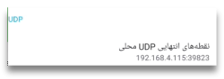
انتقال درگاه باید برای پروتکل UDP باشد (نه TCP).
سنو در اولین اجرا یک درگاه تصادفی انتخاب میکند و در اجراهای بعدی همان را نگه میدارد، اما آدرس IP محلی دستگاه شما در شبکه ممکن است هر از گاهی تغییر کند. بنابراین باید هر چند وقت یکبار صفحه تنظیمات سنو را بررسی کنید تا مطمئن شوید دستگاه شما برای شبکه سنو قابل دسترس است.
دستگاه شما قابل دسترس است اگر
وضعیت دسترسی: احتمالا در دسترس یا در دسترس
وضعیت UPnP: فعال
نکته فنی: همچنین میتوانید مطمئن شوید که روتر همیشه همان آدرس IP را به دستگاه شما اختصاص دهد (برای نمونه از طریق یک اجاره DHCP ثابت برای آدرس MAC دستگاه).
اگر رایانهای با اتصال خوب دارید که بیشتر اوقات روشن میماند و مایلید آن را بهعنوان یک پل سنو راهاندازی کنید، لطفا به خواندن ادامه دهید.
اجرای یک پل روی یک کامپیوتر
اگر رایانه شما از کانتینرهای داکر پشتیبانی میکند، میتوانید یک کلاینت از پیش
پیکربندیشده سنو را روی آن اجرا کنید تا بهعنوان یک پل عمل کند. اگر داکر هنوز
نصب نشده است، لطفا دستورالعملهای نصب Docker Engine را برای پلتفرم خود دنبال
کنید. برای توزیعهای مبتنی بر دبیان مانند اوبونتو یا لینوکس مینت، کافی است این
دستور را اجرا کنید: sudo apt install docker.io
برای راهاندازی یک محیط کلاینت سنو فقط کافی است دستور زیر را روی یک ترمینال اجرا کنید (شاید پیچیده و ترسناک به نظر برسد ولی میتوانید آن را همان طور که هست کپی کرده و در خط فرمان قرار دهید):
sudo docker run --name ceno-client \
-dv Ceno:/var/opt/ouinet --network host \
--restart unless-stopped equalitie/Ceno-client
اگر کامپیوترتان براساس سیستم GNU/Linux کار نمیکند، این فرمان را باید کمی تغییر دهید:
sudo docker run --name ceno-client \
-dv ceno:/var/opt/ouinet \
-p 127.0.0.1:8077-8078:8077-8078 -p 28729:28729/udp \
--restart unless-stopped equalitie/ceno-client
این دستور یک کانتینر با نام ceno-client را راهاندازی میکند که در هر بار بوت اجرا خواهد شد، مگر این که صراحتا به آن فرمان توقف بدهید.
لطفا برای اطلاعات بیشتر درباره نحوه کار با کانتینر، به مستندات کلاینت داکر سنو مراجعه کنید.
ویژگیها
نوار ابزار
در پایین صفحه، نواری شامل دکمههای گوناگون میبینید. بعضی از این دکمهها به خودی خود گویا هستند، اما برخی دیگر کمتر. بیایید نگاهی سریع به هر یک از آنها بیندازیم:
دکمه خانه
اولین دکمه، دکمه آشنای «خانه» است.
میتوانید این دکمه را طوری تغییر دهید که نمایش داده شود یا پنهان بماند؛ کافی است به تنظیمات > سفارشیسازی > نمایش دکمه خانه بروید
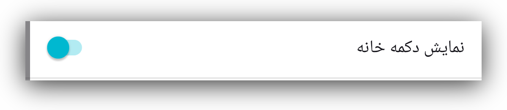دکمه سنو
بعد از آن، دکمه سنو قرار دارد. با زدن روی این دکمه صفحهای برای اطلاعرسانی باز میشود که نشان میدهد اجزای وبسایت از کجا بازیابی شدهاند. این صفحه را در بخشهای مربوط به مرور شخصی و عمومی با جزئیات بیشتری توضیح میدهیم.
دکمه اتصال امن
وقتی نشانی وبسایت مورد نظرتان را وارد کنید، دکمه اتصال امن را خواهید دید که
با یک قفل کوچک یا یک سپر کوچک نشان داده میشود و بیانگر این است که اتصال شما به
آن وبسایت امن است.
اگر روی قفل یا سپر یک خط کشیده شده باشد، یعنی اتصال به آن وبسایت امن نیست.
مشابه این در مرورگرهای دیگر هم وجود دارد.
توجه: حتا با این که اتصال به این وبسایت امن نیست، آیکون سنو یک نقطه سبز کوچک دارد. این نقطه نشاندهنده امن بودن اتصال نیست، بلکه بیانگر این است که داده مستقیما از وبسایت مبدا بازیابی شده است.
اگر روی آن بزنید، جزئیات این اتصال را خواهید دید. برای درک بهتر، اسکرینشاتهایی از اتصال امن در مقایسه با اتصال ناامن قرار دادهایم.
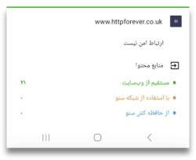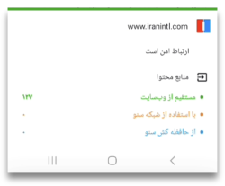
دکمه پاک کردن
اولین دکمه در سمت راست نوار آدرس، دکمه «پاک کردن» است که به شکل یک جاروی کوچک نمایش داده شده.
با زدن روی آن، کاربر میتواند انتخاب کند که همه دادههای سنو را پاک کند طوری که انگار هرگز از سنو استفاده نشده، یا فقط آنچه را که سنو در حافظه پنهان ذخیره کرده حذف کند. گزینه نخست همه ترجیحات، سایتهای برتر (بوکمارکها)، تنظیمات و سفارشیسازیها را پاک میکند، در حالی که گزینه دوم فقط وبسایتهایی را پاک خواهد کرد که برنامه سنو در حافظه پنهان دستگاه شما ذخیره کرده است.
اگر به تنظیمات > سفارشیسازی > دکمه پاک کردن بروید، میتوانید انتخاب کنید که دکمه پاک کردن در نوار ابزار نمایش داده شود یا در منو.
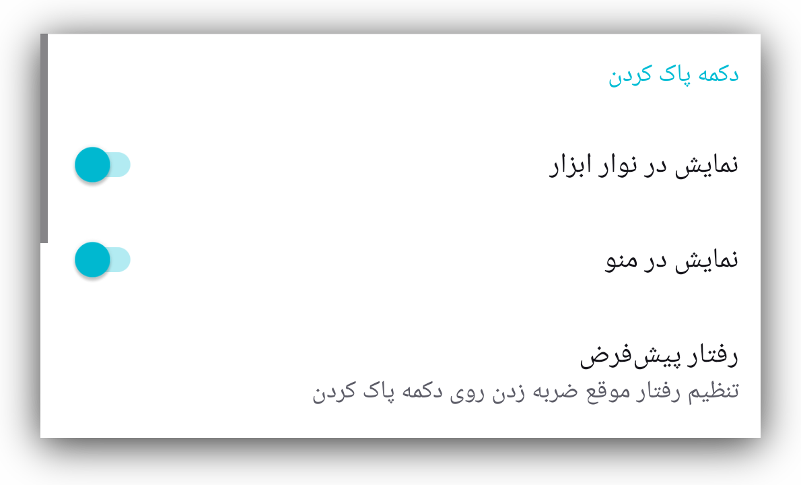با زدن روی گزینه رفتار پیشفرض، یک جعبه گفتوگو باز میشود تا انتخاب کنید که هنگام فشردن دکمه «پاک کردن» چه کاری انجام شود. این کار میتواند یادآوری گزینهها باشد (مانند تصویر بالا)، یا بلافاصله تمام محتوای ذخیرهشده در حافظه پنهان، یا حتی همه دادههای سنو را حذف کند.
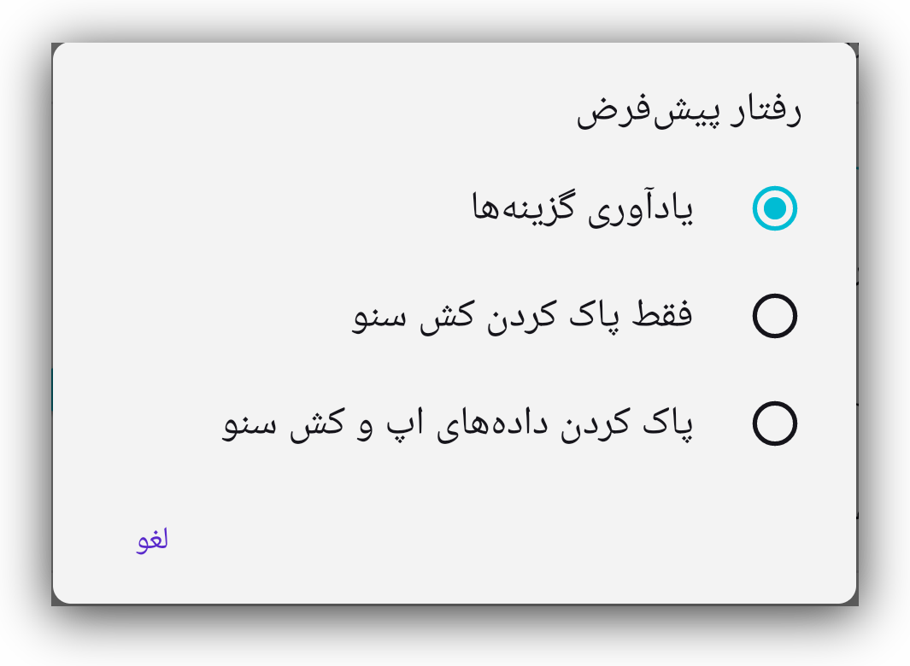دکمه زبانهها
بعدی یک مستطیل کوچک با یک عدد داخل آن است. این عدد نشان میدهد کاربر، چند زبانه باز کرده است.
با زدن روی آن، صفحهای باز میشود که در آن میتوانید همه زبانههای باز خود را ببینید.
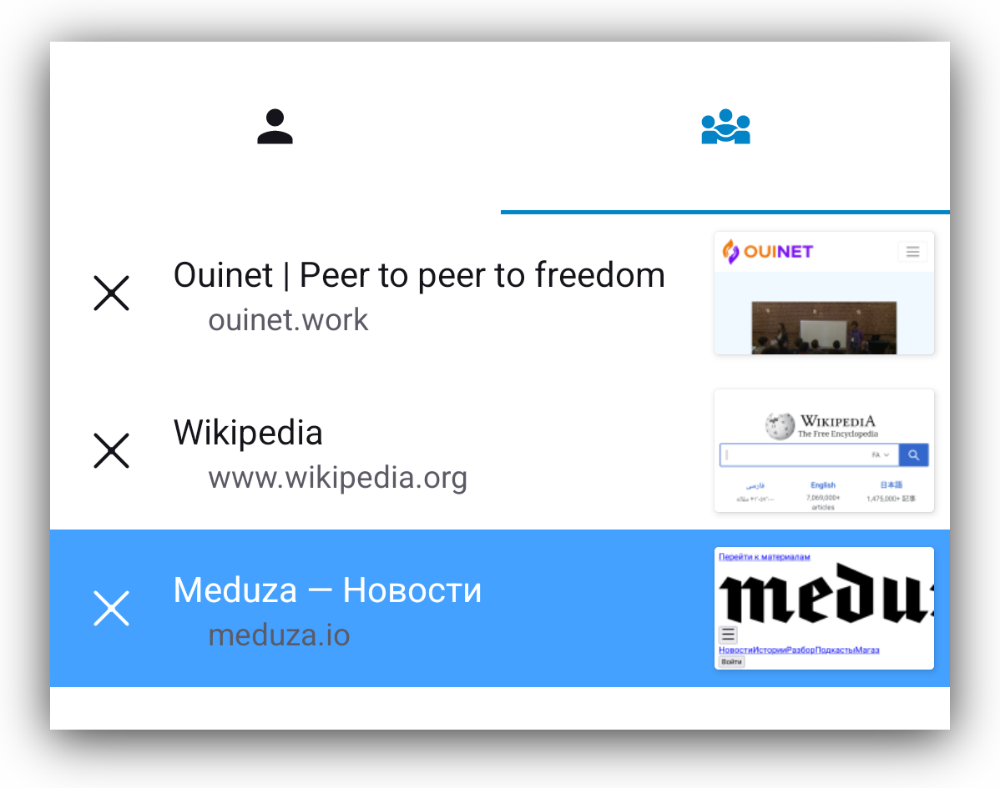میتوانید آنها را یکییکی ببندید، و اگر روی منوی عمودی در پایینِ سمت راست بزنید گزینهای برای بستن همه آنها بهطور همزمان خواهید داشت.
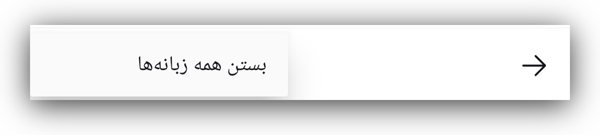وقتی صفحه زبانهها را مشاهده میکنید، در بالای آن صفحه آیکونهای مرور عمومی و شخصی را خواهید دید و میتوانید بهراحتی بین آنها جابهجا شوید.
نمای زمانی که آیکون مرور عمومی انتخاب شده است
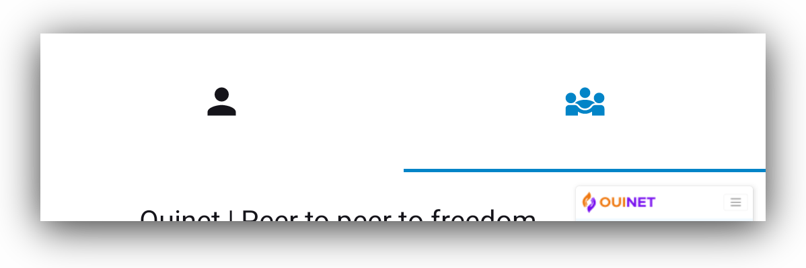نمای زمانی که مرور شخصی انتخاب شده است.
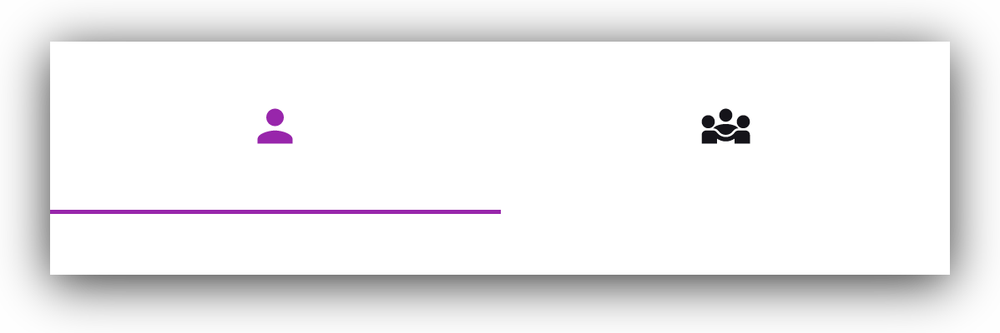منوی عمودی
آنچه منوی سهنقطهای عمودی در انتهای سمت راست نوار ابزار نمایش میدهد، به زمینه بستگی دارد.
- وقتی صفحهای از وبسایت باز باشد، این منو گزینههای مربوط به همان صفحه را نمایش میدهد.
بیشتر گزینههای این منو خودشان گویا هستند. اما اگر با uBlock Origin آشنایی ندارید، این ابزار یک مسدودکننده تبلیغات و ردیابها است.
دلیل این که ما آن را همراه با مرورگر سنو ارائه میکنیم، بیشتر برای جلوگیری از ذخیرهسازی غیرضروری تبلیغات و همچنین جلوگیری از ذخیره شدن احتمالی شناسههای منحصربهفردی است که به ردیابها مربوط میشوند.
برای آشنایی بیشتر با این مسدودکننده تبلیغات و ردیابها لطفا به صفحه وب آنها مراجعه کنید.
- اگر هنگام حضور در صفحه اصلی سنو روی این منو بزنید، میتوانید گزینهای را ببینید که امکان پاکسازی سنو را فراهم میکند (عملکرد آن همانند آیکون جارو در صفحه اصلی است).
- وقتی در صفحه زبانهها هستید، زدن این منو تنها گزینه «بستن همه زبانهها» را در اختیارتان قرار میدهد
تنظیمات
برای دسترسی به تنظیمات، از منوی سهنقطهای عمودی استفاده کرده و گزینه «تنظیمات» را انتخاب کنید.

اینها به ۵ گروه تقسیم میشوند:
عمومی
مجوزها
دادهها
ابزارهای توسعهدهنده
درباره
بیایید هر یک از آنها را بررسی کنیم.
تنظیمات: عمومی

احتمالا با بیشتر این تنظیمات آشنا هستید، چرا که مشابه گزینههای موجود در سایر مرورگرها هستند. در بخشهای بعدی، مهمترین آنها را بهطور خلاصه توضیح خواهیم داد.
انتخاب موتور جستوجوی پیشفرض

بهکمک این قسمت از تنظیمات میتوانید موتور جستوجوی پیشفرض مرورگر سنو را با تیک زدن یا نزدنِ گزینههای ارائهشده تعیین کنید.
سفارشیسازی

باز هم اشاره میکنیم که این گزینهها عمدتا گویا و واضح هستند.
فقط میخواهیم توجه شما را به گزینهای جلب کنیم که ممکن است در برنامههای دیگر وجود نداشته باشد. سنو این امکان را میدهد که آیکون اجرای آن را تغییر دهید که در برخی شرایط میتواند مفید باشد. چند گزینه برای انتخاب در اختیار شما قرار دادهایم.
فعالسازی حالت پل
هدف و کارکرد کلی حالت پل در بخش حالت پل توضیح داده شده است. در اینجا میتوانید این تنظیم را فعال یا غیرفعال کنید.
آمارهای پسزمینه

اینها دادههای آماریای هستند که به ما کمک میکنند مشکلات احتمالی هنگام استفاده از مرورگر سنو را بهتر درک کنیم. با زدن روی «آمارهای پسزمینه» صفحهای باز میشود که گزینه غیرفعال کردن این دادهها را در اختیار شما قرار میدهد.

توصیه میکنیم این تنظیمات در حالت روشن باقی بمانند، زیرا به ما کمک میکنند مشکلاتی را که برخی کاربران هنگام استفاده از سنو با آن روبهرو میشوند بهتر درک کنیم. هرچه این مشکلات را بیشتر درک کنیم، توانایی ما در حلشان نیز بیشتر میشود.
ما هیچ داده شخصیای جمعآوری نمیکنیم و هیچ دادهای را به اشخاص ثالث نمیفروشیم. برای خواندن سیاست حریم خصوصی ما لطفا روی دکمه «سیاست حریم خصوصی» بزنید.
گزارش اشکال
شرایط، وضعیت شبکه و دستگاههایی که سنو روی آنها استفاده میشود برای کاربران مختلف متفاوت است و همین میتواند گاهی باعث از کار افتادن برنامه سنو شود. برای درک علت این اتفاق در یک وضعیت خاص، سنو طوری طراحی شده که گزارش خطا تولید کند و آن را برای تیم توسعه بفرستد. شما بهعنوان کاربر میتوانید ارسال گزارش خطا را فعال یا غیرفعال کنید.
این گزارشها شامل هیچ داده شناساییکننده شخصی نیستند. اگر سنو دچار خرابی شد و از کار افتاد، توصیه میکنیم این تنظیم را فعال کنید
حذف دادههای مرورگری

با زدن روی این گزینه میتوانید انتخاب کنید که کدام دادههای سنو حذف شود.

دکمه «پاک کردن» در صفحه اصلی همه دادههای سنو را حذف میکند، اما در اینجا میتوانید انتخاب کنید چه چیزی پاک شود و چه چیزی باقی بماند.
تغییر زبان

اپلیکیشن سنو به بسیاری از زبانها ترجمه شده است. اگر زبانی هست که دوست دارید به این فهرست گسترده اضافه شود، لطفا به ما اطلاع دهید. میتوانید از طریق ایمیل support [at] ceno [dot] app یا از طریق مخزن گیتلب ما با ما در تماس باشید.
تنظیمات: مجوزها

سنو تنها به دو مجوز نیاز دارد: ارسال اعلان به کاربر و متوقف کردن بهینهسازی باتری. احتمالا هنگام اولین اجرای اپلیکیشن سنو، یا پس از راهاندازی دوباره آن بعد از پاک کردن همه دادههای سنو، از شما خواسته شده این مجوزها را بدهید.
میتوانید توضیحات بیشتر را در بخش مجوزها بخوانید.
تنظیمات: دادهها
در این بخش میتوانید ببینید کدام محتوا در اپلیکیشن سنو شما میتواند هنگام درخواست دیگر کاربران سنو با آنها به اشتراک گذاشته شود.
بخش محتوای بهاشتراکگذاشتهشده توسط شما فهرستی از وبسایتها را نشان میدهد که اپلیکیشن سنو شما قادر است با دیگر کاربران سنو به اشتراک بگذارد.
حافظه کَش محلی به شما نشان میدهد چه میزان داده ممکن است هنگام درخواست دیگر کاربران، از دستگاه شما در شبکه سنو بارگذاری شود.
زدن گزینه پاک کردن محتوای حافظه کش دادهها را از کش شما حذف میکند و دیگر چیزی برای اشتراکگذاری با همتایانتان باقی نخواهد ماند. برای کش کردن دوباره وبسایتها و توانایی اشتراکگذاری آنها با دیگران، لازم است دوباره از طریق شبکه عمومی سنو به آنها دسترسی پیدا کنید.
اطلاعات بیشتر درباره هدف این تنظیمات در بخش عمومی یا شخصی در دسترس است.
تنظیمات: ابزارهای توسعهدهنده

منابع وبسایت
سنو میتواند محتوای وبسایتی را که درخواست میکنید از منابع مختلفی بازیابی کند:
مستقیما از وبسایت اصلی، از شبکه عمومی سنو، از شبکه شخصی سنو و از کش سنو. جزئیات
بیشتر درباره این گزینهها در بخشهای مربوط به حالتهای مرور عمومی و شخصی آمده
است.
بهطور پیشفرض همه این گزینهها فعال هستند و برای بهترین نتیجه میتوانید آنها
را همان طور که هستند باقی بگذارید.
میتوانید اطلاعات دقیقتری درباره این گزینهها در بخش عمومی یا شخصی بخوانید.
محافظت در برابر ردیابی
این دو تنظیم مانع از آن میشوند که فعالیتهای آنلاین شما توسط ردیابهای شخص ثالث دنبال شود.
جزییات شبکه
این بخش شامل جزئیات تنظیمات شبکه شماست که در صورت نیاز میتواند برای تیم توسعه ما هنگام بررسی مشکلاتی که گزارش میکنید مفید باشد.
فعالسازی فایل گزارش
فعالسازی و خروجی گرفتن فایل گزارش سنو میتواند هنگام بررسی مشکلات مفید باشد. این فایلها هیچ داده شخصیِ قابلشناساییای را شامل نمیشوند. اگر آنها را در سیستم فایل دستگاه خود خروجی بگیرید، میتوانید محتوایشان را مشاهده کنید. همچنین میتوانید هنگام بروز مشکلاتی که نیازمند بررسی کارشناسان فنی ما باشد، این فایلها را با تیم توسعه ما به اشتراک بگذارید.
تنظیمات: درباره

شامل اطلاعات بیشتری درباره نصب سنو است، از جمله شماره نسخه، وضعیت سرویس پسزمینه سنو، و شماره نسخه کتابخانه Ouinet که در سنو تعبیه شده است.